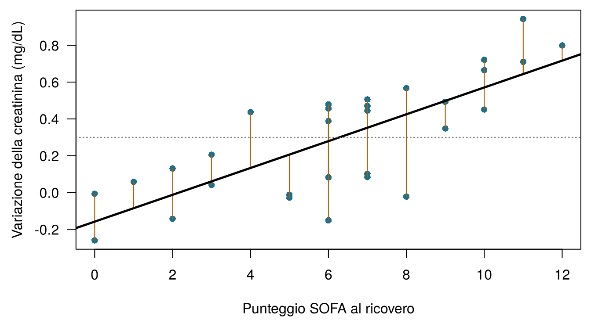
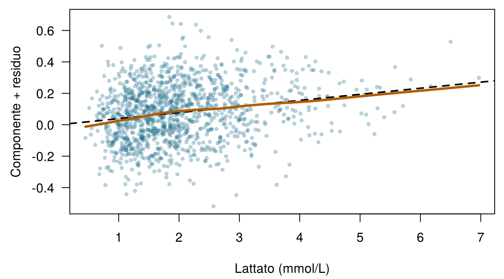
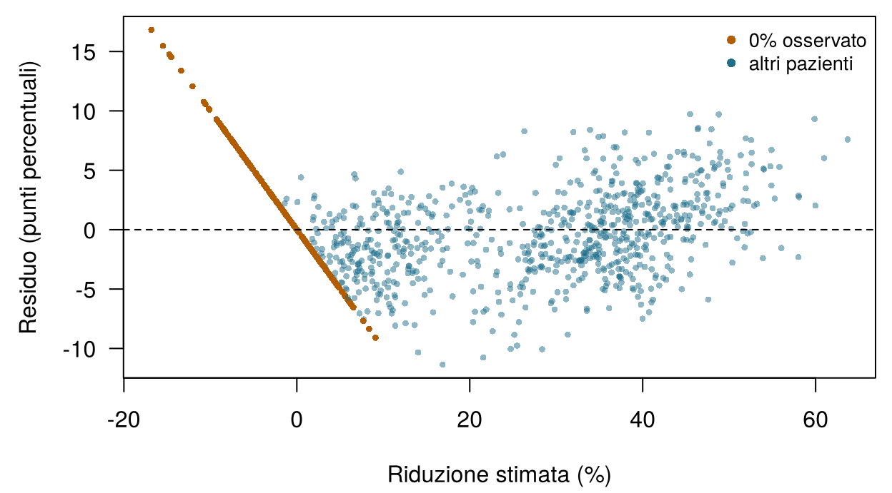

4 Modelli lineari e regolarizzazione
Quattro domande per scaldarti. Prova a indovinare; il capitolo le spiega tutte.
| Domanda | La tua risposta |
|---|---|
| La retta di Emma è variazione prevista = −0,06 + 0,06 × SOFA. Che cosa prevede, in mg/dL, per un paziente con SOFA 10? | |
| La creatinina di un paziente è aumentata in realtà di 0,50 mg/dL; la retta prevedeva 0,30. Quanto vale la differenza osservato − previsto? | |
| Se aggiungi predittori a un modello stimato con i minimi quadrati, l'errore sui dati di addestramento… | |
| Penalizzare i coefficienti grandi in modo che un modello con migliaia di geni non vada incontro a sovradattamento si chiama… |
Come usare questo capitolo
Inizi da qui?
Questo capitolo prende in prestito alcune idee dai capitoli precedenti. In una riga ciascuna:
- Modello ed errore. Un modello statistico scrive un esito come \(y = f(\mathbf{x}) + \varepsilon\): una parte sistematica \(f\) delle variabili più un errore \(\varepsilon\); un modello stimato è \(\hat f\) e la sua previsione è \(\hat y\) (Sezione 1.4). Ogni riga è un’istanza, ogni colonna una variabile; ci sono \(n\) istanze e \(p\) predittori (Definizione 1.7).
- Valutazione onesta. I modelli vengono stimati su un insieme di addestramento e giudicati su un insieme di test che non hanno mai visto; un modello troppo flessibile va incontro a sovradattamento (Sezione 1.8, Definizione 1.8).
- Dal Capitolo 3. Le metriche di regressione MAE e RMSE (errore medio nelle unità dell’esito; l’RMSE punisce di più gli errori grandi) e l’\(R^2\) (la quota della varianza dell’esito spiegata dal modello); la validazione incrociata a \(V\) partizioni (fold); un iperparametro è un’impostazione scelta con la validazione incrociata, non stimata direttamente; la fuga di informazioni (leakage) è informazione sull’esito che si infiltra nei predittori. In ONCO-1 i geni 08, 14 e 19 sono copie dell’esito affette da leakage e restano fuori da tutti i modelli di questo capitolo.
- Dal Capitolo 2. La distribuzione normale e l’idea di verosimiglianza.
| Esempio | Chi o che cosa | Esito | Volti che incontrerai |
|---|---|---|---|
| 1 Terapia intensiva del Reparto 7 | 1.250 pazienti di terapia intensiva in 4 ospedali | variazione della creatinina in 48 h (danno renale acuto se ≥ 0,3 mg/dL) | Aoife (71 anni, sepsi, rischio borderline), Tomás (54 anni, rischio basso), Priya (38 anni, rischio alto); la dott.ssa Emma Walsh; Seán, il farmacista |
| 2 Studio ONCO-1 | 1.000 pazienti randomizzati a ricevere o meno la chemioterapia | riduzione del tumore (%) | i pazienti #0042 e #0917 |
| 3 HomeBeat | 500 persone che indossano uno smartwatch a casa | punteggio di stress, evento di peggioramento | Lena |
| 4 CellWorks | 420 lotti di produzione di una terapia cellulare | punteggio di potenza | il lotto CW-118 |
Tutti e quattro i dataset sono simulati e si possono scaricare dall’appendice sui dati. La presentazione completa si trova in Sezione 1.1.
Questo capitolo costruisce il modello lineare dalle fondamenta e poi gli insegna la moderazione. Comprende dieci sezioni e un Laboratorio, sette verifiche rapide, due widget “Prova tu”, una sfida di abbinamento e tre missioni di programmazione in R e Python. Calcola circa 100 minuti. La matematica viene introdotta una riga alla volta; se una formula ti sembra densa, leggi la frase che la segue, che dice sempre la stessa cosa a parole.
La notazione in sintesi (solo per consultazione)
| Simbolo | Significato | Sezione |
|---|---|---|
| \(\beta_0\), \(\beta_j\) | intercetta e coefficiente del predittore \(j\) | Sezione 4.1 |
| \(\hat\beta_j\) | coefficiente stimato (“cappello” = stimato dai dati) | Sezione 4.1 |
| \(e_i = y_i - \hat y_i\) | residuo dell’istanza \(i\) | Sezione 4.1 |
| RSS | somma dei quadrati dei residui, \(\sum_i e_i^2\) | Sezione 4.1 |
| \(\mathbf{X}\), \(\mathbf{\beta}\) | matrice del disegno (\(n\) righe, una colonna per coefficiente) e vettore dei coefficienti | Sezione 4.2 |
| \(h_{ii}\) | leva dell’istanza \(i\) | Sezione 4.5 |
| \(D_i\) | distanza di Cook dell’istanza \(i\) | Sezione 4.5 |
| \(\lambda\) | intensità della penalità (un iperparametro) | Sezione 4.7 |
| \(\alpha\) | parametro di miscelazione dell’elastic net, da 0 (ridge) a 1 (lasso) | Sezione 4.7 |
L’elenco completo si trova nella pagina della notazione.
4.1 Da una retta ai minimi quadrati
Nel Capitolo 1 hai spostato due cursori finché la tua retta attraverso i dati del Reparto 7 non ha avuto un errore piccolo. Un computer fa la stessa cosa, ma ha bisogno di una regola precisa per “piccolo”. La regola usata dal modello lineare ha due secoli (Stigler 1981) ed è ancora quella predefinita in ogni pacchetto statistico.
Per un predittore \(x\) (per esempio il SOFA) e un esito \(y\) (la variazione della creatinina), il modello di regressione lineare semplice è
\[ y_i = \beta_0 + \beta_1 x_i + \varepsilon_i , \qquad i = 1, \dots, n , \qquad(4.1)\]
dove \(\beta_0\) (beta zero) è l’intercetta, l’esito previsto quando \(x = 0\), e \(\beta_1\) è la pendenza, la variazione dell’esito previsto per ogni aumento di un’unità di \(x\). Una volta stimati dai dati, i coefficienti ricevono il cappello, e la previsione per il paziente \(i\) è \(\hat y_i = \hat\beta_0 + \hat\beta_1 x_i\).
Definizione 4.1 (Regressione lineare) Un modello di regressione lineare scrive l’esito come un’intercetta più una somma pesata dei predittori più un errore: \(y = \beta_0 + \beta_1 x_1 + \dots + \beta_p x_p + \varepsilon\). I pesi \(\beta_j\) sono i coefficienti. “Lineare” si riferisce ai coefficienti, non ai predittori: un modello che contiene \(x^2\) o \(\log x\) è ancora lineare, perché ogni coefficiente moltiplica qualcosa di noto e i termini vengono sommati.
Come dovrebbe scegliere il computer \(\beta_0\) e \(\beta_1\)? Per qualunque retta candidata, ogni paziente ha un residuo, la distanza verticale tra ciò che è accaduto e ciò che la retta prevede (Figura 4.1). I minimi quadrati scelgono la retta i cui residui sono, in un senso preciso, i più piccoli possibile.
Definizione 4.2 (Residuo e minimi quadrati) Il residuo dell’istanza \(i\) è \(e_i = y_i - \hat y_i\), osservato meno previsto. La somma dei quadrati dei residui è \(\text{RSS} = \sum_{i=1}^n e_i^2\). I minimi quadrati ordinari (OLS, dall’inglese ordinary least squares) stimano i coefficienti come i valori che rendono la RSS la più piccola possibile.
Perché i quadrati, anziché le distanze assolute che hai minimizzato nel Capitolo 1? Per tre ragioni. I quadrati danno un criterio regolare, con un unico minimo che si può trovare esattamente, con una formula, invece che per tentativi. Puniscono gli errori grandi più di quelli piccoli, che spesso è ciò che vogliamo quando un errore grande è clinicamente più grave. E, se gli errori seguono una distribuzione normale, la retta dei minimi quadrati è anche la retta di massima verosimiglianza (Capitolo 2). Per un solo predittore la formula è breve:
\[ \hat\beta_1 = \frac{\sum_{i}(x_i - \bar x)(y_i - \bar y)}{\sum_{i}(x_i - \bar x)^2}, \qquad \hat\beta_0 = \bar y - \hat\beta_1 \bar x , \qquad(4.2)\]
dove \(\bar x\) e \(\bar y\) sono le medie. A parole: la pendenza misura quanto \(x\) e \(y\) variano insieme, rispetto a quanto \(x\) varia da sola, e la retta passa sempre per il punto delle medie \((\bar x, \bar y)\) (James et al. 2021, ch. 3).
Su tutti i 1.250 pazienti del Reparto 7, i minimi quadrati danno \(\hat y = -0,056 + 0,060 \times \text{SOFA}\): ogni punto di SOFA in più è associato a un aumento della creatinina più grande di circa 0,06 mg/dL. Sono questi i numeri, arrotondati, che compaiono nelle domande di riscaldamento. Ogni metodo di questo libro esegue il ciclo di apprendimento del Capitolo 1 (ipotizzare, valutare, correggere, ripetere); per i minimi quadrati il ciclo ha una scorciatoia, perché l’Equazione 4.2 salta direttamente alla retta migliore.
Due analiste stimano una retta sugli stessi dati del Reparto 7. L’analista A minimizza la somma dei residui in valore assoluto; l’analista B minimizza la somma dei quadrati dei residui. Quale affermazione è vera?
4.2 Molti predittori: la regressione lineare multipla
La domanda di Seán richiede più del SOFA. La regressione lineare multipla usa tutte le misure del ricovero contemporaneamente. Per il Reparto 7, scrivendo ogni variabile con il suo nome nel dataset,
\[ \begin{aligned} &\mathtt{delta\_creatinine\_48h} \\ &\quad = \beta_0 + \beta_1\,\mathtt{ICU\_B} + \beta_2\,\mathtt{ICU\_C} + \beta_3\,\mathtt{ICU\_D} \\ &\quad + \beta_4\,\mathtt{age} + \beta_5\,\mathtt{sofa} + \beta_6\,\mathtt{lactate} \\ &\quad + \beta_7\,\mathtt{map\_min} + \beta_8\,\mathtt{baseline\_creat} \\ &\quad + \beta_9\,\mathtt{protocol\_adherence} + \beta_{10}\,\mathtt{bun} \\ &\quad + \beta_{11}\,\mathtt{crp} + \beta_{12}\,\mathtt{albumin} + \varepsilon . \end{aligned} \qquad(4.3)\]
patient_id resta fuori (identifica una riga e non porta alcuna informazione sul paziente), così come l’esito stesso.
4.2.1 Le categorie diventano colonne: la codifica con variabili indicatrici
site è categoriale: ICU_A, ICU_B, ICU_C o ICU_D. Un coefficiente moltiplica un numero, quindi le quattro sedi vengono trasformate in tre colonne 0/1 chiamate variabili indicatrici (o dummy): ICU_B vale 1 per i pazienti trattati nella ICU_B e 0 altrimenti, e lo stesso vale per ICU_C e ICU_D. La ICU_A, che non ha una colonna, è il livello di riferimento: i suoi pazienti hanno 0 in tutte e tre le colonne. Il coefficiente di ICU_C è allora la differenza tra ICU_C e ICU_A per pazienti uguali in tutto il resto. Serve una colonna in meno rispetto al numero di categorie, perché una quarta colonna sarebbe prevedibile dalle altre tre (varrebbe 1 esattamente quando tutte le altre valgono 0).
Definizione 4.3 (Matrice del disegno e variabili indicatrici) La matrice del disegno \(\mathbf{X}\) ha una riga per istanza e una colonna per coefficiente: una colonna di 1 per l’intercetta, una colonna per ogni predittore numerico e \(k-1\) colonne indicatrici (0/1) per un predittore categoriale con \(k\) livelli, uno dei quali fa da riferimento. Il modello diventa \(\mathbf{y} = \mathbf{X}\mathbf{\beta} + \mathbf{\varepsilon}\).
In forma matriciale, la stima dei minimi quadrati ha una celebre forma chiusa, la soluzione delle cosiddette equazioni normali (James et al. 2021, cap. 3; Hastie, Tibshirani, e Friedman 2009, cap. 3):
\[ \hat{\mathbf{\beta}} = (\mathbf{X}^\top\mathbf{X})^{-1}\mathbf{X}^\top\mathbf{y} . \qquad(4.4)\]
Non dovrai calcolarla a mano. Vale la pena sapere due cose. Primo, esiste solo se nessuna colonna di \(\mathbf{X}\) è una combinazione esatta delle altre e se ci sono più righe che colonne; ci torneremo quando le colonne saranno 2.000 geni. Secondo, per i dati di addestramento e di test va usato lo stesso disegno: le stesse colonne indicatrici, nello stesso ordine, con lo stesso livello di riferimento. In R, model.matrix() costruita a partire dalla formula dei dati di addestramento lo garantisce; in Python, fissa le categorie prima di chiamare pd.get_dummies() (McKinney 2010). Un paziente di test proveniente da una sede senza pazienti di addestramento non avrebbe una colonna in cui entrare.
4.2.2 Leggere i coefficienti
La Tabella 4.1 mostra il modello stimato. Poiché il Reparto 7 è simulato, possiamo fare una cosa impossibile con dati reali: mettere ogni stima accanto al valore vero usato per generare i dati.
| Termine | Unità | Stima | IC al 95% | Valore nella simulazione |
|---|---|---|---|---|
| (Intercept) | n/d | 0.38 | 0.252 a 0.507 | n/d |
| siteICU_B | vs ICU_A | 0.00681 | -0.0219 a 0.0355 | 0.03 |
| siteICU_C | vs ICU_A | 0.0741 | 0.0454 a 0.103 | 0.09 |
| siteICU_D | vs ICU_A | 0.134 | 0.105 a 0.163 | 0.13 |
| age | per anno | -0.0000761 | -0.000802 a 0.00065 | 0 |
| sofa | per punto | 0.0415 | 0.0372 a 0.0458 | 0.04 |
| lactate | per mmol/L | 0.0387 | 0.0279 a 0.0495 | 0.10 × log(lactate + 0.1) |
| map_min | per mmHg | -0.00631 | -0.00731 a -0.0053 | -0.006 |
| baseline_creat | per mg/dL | 0.231 | 0.201 a 0.261 | 0.22 |
| protocol_adherence | per 1,0 (0 → 100%) | -0.292 | -0.351 a -0.234 | -0.28 |
| bun | per mg/dL | 0.0025 | 0.00122 a 0.00378 | 0.0035 |
| crp | per mg/L | 0.00127 | 0.000986 a 0.00155 | 0.0012 |
| albumin | per g/dL | -0.075 | -0.0965 a -0.0534 | -0.08 |
Ogni coefficiente risponde alla domanda “di quanto differisce la variazione prevista della creatinina tra due pazienti che differiscono di un’unità in questo predittore e sono uguali in tutti gli altri?”
Definizione 4.4 (Interpretare un coefficiente) In una regressione lineare multipla, \(\beta_j\) è la differenza attesa nell’esito tra due istanze che differiscono di un’unità in \(x_j\) e hanno gli stessi valori di tutti gli altri predittori del modello. La sua grandezza dipende dalle unità di \(x_j\); il suo significato dipende da quali altri predittori sono nel modello. Descrive un’associazione: è un effetto causale solo sotto ipotesi aggiuntive.
Leggi tre righe tenendo a mente questa frase.
- Creatinina basale. Per due pazienti con gli stessi valori di SOFA, lattato, pressione arteriosa e così via, ma con una creatinina basale che differisce di 1 mg/dL, si prevede una differenza di 0,23 mg/dL nell’aumento a 48 ore (intervallo di confidenza al 95% da 0,20 a 0,26). La simulazione usava 0,22.
- Età. La stima è -0,00008 per anno, sostanzialmente zero, come nella simulazione. Nella vita reale l’età conta per i reni, ma qui la sua influenza passa attraverso la creatinina basale, che è già nel modello.
- Albumina, la domanda di Seán. Ogni g/dL di albumina in più è associato a un aumento più piccolo di 0,075 mg/dL. Significa che un’infusione di albumina proteggerebbe i reni di Aoife? Non sulla base di questo modello. Nel Capitolo 1 hai visto che la gravità confonde l’aderenza al protocollo; anche un’albumina bassa è un indicatore di gravità e di infiammazione (Soeters, Wolfe, e Shenkin 2019). Un coefficiente ti dice come differiscono nell’esito i pazienti che si trovano a differire per l’albumina, non che cosa accadrebbe se tu cambiassi l’albumina (Hernán e Robins 2020). Il Capitolo 13 è dedicato a questa seconda domanda.
I coefficienti espressi in unità diverse non si possono confrontare direttamente: 0,04 per punto di SOFA e 0,0013 per mg/L di PCR non dicono nulla su quale variabile conti di più, perché la PCR di un paziente tipico varia di decine di mg/L. Se vuoi confrontarli, prima standardizza i predittori (sottrai la media e dividi per la deviazione standard), così che ogni coefficiente sia “per deviazione standard”. Standardizzeremo tutti i predittori prima di regolarizzarli nella Sezione 4.7.
4.2.3 I pazienti di stasera
Il modello stimato fornisce una previsione per ciascuno dei pazienti di stasera, con un intervallo di previsione al 95%: un intervallo che dovrebbe contenere l’esito di un nuovo paziente come questo 95 volte su 100, se le ipotesi del modello valgono. Per essere confrontato con altri modelli, un modello deve essere stimato solo sui pazienti di addestramento; per questo la Tabella 4.2 usa la stessa formula stimata di nuovo sui 1.000 pazienti di addestramento della suddivisione condivisa; i coefficienti cambiano appena.
| Paziente | Previsione | Intervallo di previsione al 95% |
|---|---|---|
| Aoife Byrne | 0.30 | -0.06 – 0.66 |
| Tomás Ruiz | -0.15 | -0.51 – 0.21 |
| Priya Nair | 1.19 | 0.83 – 1.56 |
La previsione per Aoife, 0,30 mg/dL, resta vicina alla soglia di AKI di 0,3, e il suo intervallo si estende da entrambi i lati della soglia. Il modello è più utile per Tomás (Tomás Ruiz, 54 anni, il paziente a basso rischio) e per Priya (Priya Nair, 38 anni, molto grave), i cui intervalli stanno interamente da un lato. Un singolo numero nasconde questa differenza; il Capitolo 5 trasforma le previsioni in probabilità di AKI e il Capitolo 8 rende esplicita l’incertezza.
Nella Tabella 4.1 il coefficiente di siteICU_D vale circa 0,13. Che cosa significa?
Stima la tua prima regressione multipla. I dati del Reparto 7 sono caricati come icu. In R, il codice stima con lm() un modello lineare di delta_creatinine_48h in funzione di sofa, map_min e baseline_creat; completa lo spazio vuoto per estrarre il coefficiente di baseline_creat. In Python, completa lo spazio vuoto con il risolutore dei minimi quadrati di numpy (Harris et al. 2020). Come si confronta il coefficiente con il valore della Tabella 4.1, ottenuto da un modello con più predittori?
lm() (abbreviazione di linear model, modello lineare) ha stimato il modello; coef() ne restituisce i coefficienti, con i nomi dei predittori. Scegline uno scrivendo il suo nome tra le virgolette.
coef(fit)["baseline_creat"]Il risolutore dei minimi quadrati di numpy è np.linalg.lstsq.
beta, *_ = np.linalg.lstsq(X, y, rcond=None)4.3 Leggere l’output: incertezza, valori p e ANOVA
In R, summary() stampa il classico resoconto della regressione (qui ridotto alle prime righe della tabella dei coefficienti).
summary(fit_w7) Estimate Std. Error t value Pr(>|t|)
(Intercept) 0.3796 0.0651 5.8285 0.0000
siteICU_B 0.0068 0.0146 0.4652 0.6419
age -0.0001 0.0004 -0.2057 0.8371
sofa 0.0415 0.0022 18.7489 0.0000
albumin -0.0750 0.0110 -6.8279 0.0000
Residual standard error: 0.181 on 1237 degrees of freedom
Multiple R-squared: 0.641, Adjusted R-squared: 0.638
F-statistic: 184.4 on 12 and 1237 DF, p-value < 2.2e-16Ogni riga riporta la stima, il suo errore standard (quanto varierebbe la stima da un campione all’altro), il valore t (la stima divisa per l’errore standard) e un valore p. Sotto la tabella: l’errore standard residuo (residual standard error), circa 0,18 mg/dL, è la grandezza tipica di un residuo; \(R^2 = 0,64\) dice che il modello spiega circa il 64% della variabilità dell’esito (sui dati di addestramento, quindi in modo ottimistico; Capitolo 3); l’\(R^2\) corretto (adjusted) applica una piccola penalità per il numero di predittori; e il test F chiede se i predittori, presi insieme, spieghino qualcosa.
Definizione 4.5 (Intervallo di confidenza e valore p (in breve)) Un intervallo di confidenza al 95% per \(\beta_j\) è un intervallo calcolato in modo che, su molte ripetizioni dello studio, il 95% di tali intervalli contenga il valore vero. Il valore p di \(\beta_j\) è la probabilità di ottenere una stima lontana da zero almeno quanto quella osservata, se il coefficiente vero fosse zero e le ipotesi del modello fossero valide.
Un valore p è facile da fraintendere (Wasserstein e Lazar 2016). Non è la probabilità che il predittore non abbia alcun effetto, e non misura quanto sia grande o importante un’associazione. Con 1.250 pazienti, un’associazione minuscola può avere un valore p piccolissimo; con 30 pazienti, un’associazione grande e clinicamente importante può non averlo. L’intervallo di confidenza di solito è più informativo, perché mostra sia la grandezza dell’associazione sia la sua incertezza, nelle unità dell’esito. Quando un modello ha migliaia di predittori, alcuni avranno valori p piccoli per puro caso; per questa situazione esistono procedure che controllano il tasso di false scoperte (Benjamini e Hochberg 1995), e la regolarizzazione, più avanti in questo capitolo, offre un’altra strada.
4.3.1 ANOVA: l’ordine delle domande conta
Una tabella di analisi della varianza (ANOVA) scompone la variabilità spiegata dal modello nei contributi di ciascun predittore, con un test F per ognuno. La funzione anova() di R lo fa in modo sequenziale: a ogni predittore viene attribuito ciò che spiega dopo i predittori elencati prima di lui e prima di quelli elencati dopo. L’ordine della formula, quindi, cambia la risposta.
Nel Reparto 7 l’effetto è vistoso. Con age al secondo posto, come nell’Equazione 4.3, l’ANOVA sequenziale attribuisce all’età un valore p di 0,00014. Testando l’età per ultima, dopo tutti gli altri predittori, con drop1(fit, test = "F"), si ottiene 0,84. Sono entrambe risposte corrette a domande diverse. La prima chiede “l’età spiega qualcosa, ignorando tutto ciò che viene dopo di lei nella formula?”, e la risposta è sì, perché i pazienti più anziani hanno una creatinina basale più alta. La seconda chiede “l’età aggiunge qualcosa quando la creatinina basale e il resto sono già noti?”, e la risposta è no. Quando tra i predittori non c’è un ordine naturale, usa i test “ogni termine per ultimo” (drop1() in R base, oppure Anova() del pacchetto car (Fox e Weisberg 2019)), che per i predittori numerici coincidono con i test t della tabella riassuntiva.
Per albumin, la tabella riassuntiva riporta \(p < 0.001\). Quale interpretazione è corretta?
4.4 Sei ipotesi
I numeri della Tabella 4.1 sono affidabili solo se il modello è una rappresentazione ragionevole dei dati. La regressione lineare poggia su sei ipotesi; la Figura 4.2 mostra come appare ciascuna quando vale e quando non vale.
![Dodici piccoli pannelli in sei coppie. Linearità: una nuvola rettilinea contro una nuvola curva. Indipendenza: residui sparsi a caso nel tempo contro residui che vagano in lunghe sequenze. Varianza costante: una banda uniforme contro un imbuto. Normalità: un grafico Q-Q sulla retta contro uno che se ne allontana nella coda superiore. Collinearità: due predittori non correlati contro due quasi perfettamente correlati. Punti influenti: una retta attraverso una nuvola contro una retta tirata verso il basso da un punto estremo.](ch04.it_files/figure-html/fig-ch04-assumptions-1.png)
- Linearità. L’esito medio varia linearmente con ciascun predittore (sulla scala usata nel modello). Se la relazione vera è curva, il modello sbaglia sistematicamente in alcune zone. Verifica: i residui in funzione dei valori stimati, o di ciascun predittore, non devono mostrare curvature. Rimedio: trasformare un predittore (logaritmo, quadrato), aggiungere una spline o usare un modello più flessibile (Capitoli 6 e 7).
- Indipendenza degli errori. Il residuo di un paziente non dice nulla sul residuo di un altro. L’ipotesi non vale con misure ripetute sullo stesso paziente, con pazienti raggruppati negli ospedali o con dati raccolti nel tempo. Conseguenza: gli errori standard risultano troppo piccoli e i valori p troppo ottimistici. Verifica: rappresentare i residui in ordine temporale o per gruppo. Rimedio: modelli per dati raggruppati o longitudinali.
- Varianza costante (omoschedasticità). La dispersione dei residui è la stessa su tutto l’intervallo dei valori stimati. Una forma a imbuto indica eteroschedasticità. Verifica: grafico dei residui o grafico scala–posizione; esiste un test formale (Breusch e Pagan 1979). Rimedio: trasformare l’esito, usare i minimi quadrati pesati o errori standard robusti (“sandwich”) (White 1980).
- Normalità degli errori. Gli errori seguono una distribuzione normale. Conta per i valori p e gli intervalli esatti nei campioni piccoli, e per gli intervalli di previsione; conta poco per le stime in sé o, con campioni grandi, per gli intervalli di confidenza. Verifica: un grafico Q–Q, in cui i punti devono seguire la retta.
- Assenza di collinearità (grave). I predittori non sono legati tra loro in modo troppo forte. Con predittori molto correlati il modello non riesce a distinguere i loro contributi, quindi i singoli coefficienti diventano instabili e i loro errori standard grandi, anche se le previsioni possono restare buone. Verifica: le correlazioni e il fattore di inflazione della varianza (Sezione 4.5). Rimedio: eliminare o combinare predittori, oppure regolarizzare (Sezione 4.7). La collinearità ritorna nel Capitolo 10.
- Nessun punto eccessivamente influente. Nessun singolo paziente determina la stima. Verifica: leva e distanza di Cook (Sezione 4.5). Rimedio: per prima cosa controllare che il dato non contenga errori; non eliminare mai un paziente solo perché è scomodo.
Non tutte le ipotesi contano per ogni scopo (Tabella 4.3). Sotto le prime tre ipotesi, più l’assenza di collinearità esatta, le stime dei minimi quadrati sono non distorte e hanno la varianza più piccola tra gli stimatori lineari non distorti, un risultato noto come teorema di Gauss–Markov; la normalità è l’ipotesi aggiuntiva alla base dei valori p e degli intervalli esatti nei campioni piccoli (James et al. 2021, ch. 3; Hastie, Tibshirani, e Friedman 2009, ch. 3).
| Ipotesi | Coefficienti e previsioni | Errori standard, valori p, intervalli di confidenza | Intervalli di previsione |
|---|---|---|---|
| Linearità | essenziale | essenziale | essenziale |
| Indipendenza | di solito nessun problema | essenziale | importante |
| Varianza costante | nessun problema | importante | essenziale |
| Normalità | nessun problema | solo nei campioni piccoli | importante |
| Assenza di collinearità grave | previsioni senza problemi; singoli coefficienti instabili | importante | nessun problema |
| Nessun punto influente | importante | importante | importante |
Un gruppo costruisce un modello lineare su 1.250 pazienti solo per prevedere la variazione della creatinina, e lo giudicherà in base all’errore su un insieme di test separato. Di quale ipotesi può preoccuparsi di meno?
4.5 Diagnostica: verificare il modello del Reparto 7
In R, plot() applicato a un modello lineare stimato disegna quattro grafici diagnostici standard (Figura 4.3).

Leggili uno alla volta.
- Residui vs valori stimati. Una banda uniforme attorno a zero con una linea di tendenza piatta: nessun segno di una relazione curva nel complesso, e nessun imbuto.
- Q–Q normale. I punti seguono la diagonale quasi perfettamente; l’ipotesi di normalità è ragionevole.
- Scala–posizione. La linea di tendenza è quasi piatta: la dispersione dei residui è più o meno la stessa per aumenti previsti piccoli e grandi.
- Residui vs leva. Tutti i pazienti hanno una leva bassa e la distanza di Cook più grande è 0,011, molto al di sotto della curva di 0,5 che R disegna quando un paziente vi si avvicina.
Questi grafici guardano il modello nel suo insieme e possono nascondere un problema legato a un singolo predittore. Un grafico componente più residuo mostra, per un predittore, il suo contributo stimato più i residui (Fox e Weisberg 2019). Per il lattato si incurva (Figura 4.4): l’esito sale rapidamente quando il lattato è basso e più lentamente quando è alto. È esattamente così che sono stati generati i dati, con \(\log(\text{lattato})\). Sostituire lactate con log(lactate) fa salire l’\(R^2\) corretto soltanto da 0,638 a 0,638: un miglioramento reale ma piccolo, come accade di solito.

4.5.1 Leva, valori anomali e influenza
Non tutti i pazienti insoliti sono un problema, e le tre parole usate per descriverli significano cose diverse.
Definizione 4.6 (Leva, valore anomalo e distanza di Cook) Un’istanza ha una leva \(h_{ii}\) alta quando i suoi valori dei predittori sono lontani da quelli delle altre istanze: potrebbe tirare la retta con forza. Un valore anomalo (outlier) è un’istanza con un residuo grande: il modello la descrive male. Un’istanza è influente quando rimuoverla cambierebbe in modo apprezzabile i coefficienti stimati. La distanza di Cook \(D_i\) combina i due ingredienti, \[ D_i = \frac{e_i^2}{(p+1)\,s^2}\cdot\frac{h_{ii}}{(1-h_{ii})^2}, \] dove \(s^2\) è la varianza residua e \(p+1\) il numero di coefficienti (Cook 1977).
Un paziente con leva alta che giace sulla retta è innocuo; un valore anomalo con valori medi dei predittori sposta la retta solo di poco; è la combinazione delle due cose a rendere influente un punto (Belsley, Kuh, e Welsch 1980). Le regole pratiche più comuni segnalano, per un esame più attento, una leva superiore a \(2(p+1)/n\) e una distanza di Cook superiore a \(4/n\), e considerano \(D_i > 1\) un avvertimento serio (Fox e Weisberg 2019). Sono segnalazioni, non verdetti: la risposta giusta è controllare il dato (un errore di battitura in un valore di laboratorio?) e riportare se le conclusioni cambiano senza quel paziente, non eliminarlo in silenzio. Nel Reparto 7, 63 pazienti superano la soglia di segnalazione \(4/n\), come ci si aspetterebbe per caso su 1.250, e nessuno si avvicina minimamente a 1.
Per la collinearità, il fattore di inflazione della varianza (VIF, dall’inglese variance inflation factor) del predittore \(j\) è \(\text{VIF}_j = 1/(1-R_j^2)\), dove \(R_j^2\) è l’\(R^2\) di una regressione di \(x_j\) su tutti gli altri predittori. Indica quante volte la varianza di \(\hat\beta_j\) è più grande di quanto sarebbe se \(x_j\) non fosse legato agli altri predittori; valori superiori a 5 o 10 sono di solito considerati un segnale di problemi (James et al. 2021, ch. 3). Nel Reparto 7 il VIF più grande è 1,71, per sofa: nessuna preoccupazione.
Trascina un paziente. I punti sono 30 pazienti del Reparto 7. Il paziente rosso si può trascinare ovunque. La linea continua è la stima dei minimi quadrati con il paziente rosso, quella tratteggiata senza. Osserva la leva, il residuo standardizzato e la distanza di Cook. Usa i pulsanti per tre casi classici. Obiettivo: rendere influente il paziente rosso, con una distanza di Cook superiore a 1.
Tre lezioni dal widget. Un paziente con un residuo grande vicino al centro dell’intervallo di SOFA inclina appena la retta, perché ha molti vicini che la tengono al suo posto. Un paziente con un SOFA estremo che concorda con gli altri non cambia nulla. Solo la combinazione, estremo e discordante, trascina la retta, e allora può ribaltare la conclusione di uno studio piccolo. Nei dati reali un punto del genere è spesso un errore di registrazione, oppure un paziente diverso da tutti gli altri, per il quale comunque non ci si dovrebbe fidare del modello.
Un dataset di 200 pazienti di terapia intensiva include una ragazza di 19 anni; tutti gli altri hanno più di 45 anni. Il suo esito è quasi esattamente quello previsto dalla retta stimata. Quale descrizione le si addice?
A caccia di pazienti influenti. Stima il modello del Reparto 7 con gli otto predittori numerici e conta quanti pazienti hanno una distanza di Cook superiore alla soglia di segnalazione \(4/n\).
La soglia è \(4/n\): scrivi 4 nello spazio vuoto.
sum(cd > 4 / nrow(icu))La soglia è \(4/n\): scrivi 4 nello spazio vuoto.
int((cooks > 4 / len(y)).sum())4.5.2 Quale ipotesi non vale?
I grafici diagnostici sono un’abilità dell’occhio, e l’occhio migliora con la pratica. I sei pannelli della Figura 4.5 provengono da sei modelli diversi, ciascuno con un problema.
![Pannello A: un grafico Q–Q normale i cui punti si incurvano verso l'alto, sopra la retta, all'estremità destra. Pannello B: residui in funzione dei valori stimati che si allargano come un imbuto. Pannello C: residui in funzione della leva con un punto a leva molto alta e un residuo negativo grande, oltre la curva della distanza di Cook pari a 1. Pannello D: residui in funzione dei valori stimati che formano una U. Pannello E: residui rappresentati per giorno di ricovero, che restano sopra lo zero per settimane e poi sotto. Pannello F: peso corporeo in funzione dell'indice di massa corporea, quasi su una retta.](ch04.it_files/figure-html/fig-ch04-which-1.png)
Abbina ciascun pannello della Figura 4.5 all’ipotesi che non vale.
- Pannello A: grafico Q–Q dei residui di un modello per i costi ospedalieri. Normalità
- Pannello B: residui di un modello per la durata della degenza. Varianza costante
- Pannello C: residui in funzione della leva per un piccolo studio di definizione della dose. Nessun punto influente
- Pannello D: residui di un modello per la glicemia in funzione dell’età. Linearità
- Pannello E: residui di un modello a livello di reparto, rappresentati per giorno di ricovero nell’arco di cinque mesi. Indipendenza
- Pannello F: due predittori dello stesso modello. Assenza di collinearità
4.6 Quando i predittori si affollano: ONCO-1
Passiamo ora allo studio ONCO-1. Lo studio ha randomizzato pazienti con tumori solidi a ricevere o meno la chemioterapia e ha misurato, per ciascuno, la riduzione del tumore (response_percent), alcune variabili cliniche e l’espressione di 2.000 geni. La versione dei dati per il browser ha 1.000 pazienti e i primi 50 geni. Scritto con i nomi del dataset, il modello lineare per lo studio completo è
\[ \begin{aligned} &\mathtt{response\_percent} \\ &\quad = \beta_0 + \beta_1\,\mathtt{treatment\_chemo} + \beta_2\,\mathtt{dose\_intensity} \\ &\quad + \beta_3\,\mathtt{patient\_age} + \beta_4\,\mathtt{tumor\_grade\_G2} \\ &\quad + \beta_5\,\mathtt{tumor\_grade\_G3} + \beta_6\,\mathtt{performance\_score} \\ &\quad + \beta_7\,\mathtt{gene\_01} + \beta_8\,\mathtt{gene\_02} + \dots + \beta_{2006}\,\mathtt{gene\_2000} + \varepsilon . \end{aligned} \qquad(4.5)\]
Quattro tipi di colonne restano fuori: patient_id (un identificativo), high_response (l’esito in forma sì/no), baseline_tumor_mm e post_tumor_mm (da cui si calcola l’esito) e i geni 08, 14 e 19 (copie rumorose dell’esito, il leakage che hai incontrato nel Capitolo 3). Nei dati per il browser restano così 53 predittori: sei colonne cliniche e 47 geni.
Tre caratteristiche di questo problema spingono i minimi quadrati ordinari al limite.
Troppe colonne. Nello studio completo, \(p = 2\,006\) coefficienti. Ogni volta che \(p\) è almeno pari a \(n\), l’Equazione 4.4 non ha una soluzione unica: infiniti vettori di coefficienti si adattano perfettamente ai dati di addestramento, con residui nulli, e sono in totale disaccordo sui pazienti nuovi. Anche quando \(p\) è un po’ più piccolo di \(n\), l’OLS usa ogni colonna per inseguire il rumore (Hastie, Tibshirani, e Friedman 2009, cap. 18).
Colonne correlate. I geni sono co-espressi. In ONCO-1, gene_01 e gene_12 hanno una correlazione di -0,84, perché entrambi seguono lo stesso programma biologico sottostante. Trattamento e dose sono ancora più intrecciati: l’intensità di dose è zero per ogni paziente no_chemo e compresa tra 0,8 e 1,1 per ogni paziente chemo, quindi le due colonne portano quasi la stessa informazione. I loro VIF nella stima OLS sono 67 e 67. Il modello può prevedere bene e non essere comunque in grado di dire come ripartire il merito tra le due (Belsley, Kuh, e Welsch 1980).
Associazioni marginali e corrette differiscono. Da solo, gene_01 è quasi scollegato dalla riduzione del tumore (correlazione 0,03). Eppure, nella simulazione, è uno dei tre geni che influenzano davvero la risposta. Il suo effetto è mascherato perché varia insieme a gene_12, di cui compensa l’effetto nella correlazione grezza. Solo un modello che li includa entrambi, correggendo l’uno per l’altro, può farli emergere; esaminare i geni uno alla volta farebbe perdere completamente gene_01.
C’è anche un campanello d’allarme nell’esito stesso: il 25% dei pazienti ha una riduzione esattamente dello 0%, perché un tumore che cresce viene registrato come 0 (Figura 4.6). Nessuna retta rispetta questo pavimento; i residui di questi pazienti si allineano in una striscia diagonale, una chiara violazione della linearità e della varianza costante nella parte bassa dell’intervallo. Qui manteniamo il modello lineare perché è l’argomento del capitolo; il Capitolo 5 modella la versione sì/no dell’esito, e il Capitolo 6 usa gli alberi, che gestiscono in modo naturale pavimenti di questo tipo.

Quanto costa inseguire il rumore? Stima l’OLS su soli 80 pazienti di addestramento, con gli stessi 53 predittori, e mettilo alla prova sui 200 pazienti di test della suddivisione condivisa. Il suo RMSE di addestramento è 2,14 punti percentuali; sui pazienti di test è 6,06. Il modello ha memorizzato i suoi 80 pazienti. Con tutti gli 800 pazienti di addestramento il divario è molto più piccolo (3,89 contro 4,40). Il problema sta nel rapporto tra predittori e pazienti, ed è più grave proprio dove la biologia è più interessante: migliaia di geni, centinaia di pazienti.
4.7 Regolarizzazione: ridge, lasso ed elastic net
Il rimedio è cambiare il significato di “migliore”. Invece di chiedere solo residui piccoli, chiediamo residui piccoli e coefficienti piccoli, e lasciamo che un unico numero fissi l’equilibrio.
Definizione 4.7 (Regolarizzazione e intensità della penalità) La regolarizzazione (o contrazione, shrinkage) stima i coefficienti minimizzando la somma dei quadrati dei residui più una penalità che cresce con la grandezza dei coefficienti: \[ \text{RSS}(\mathbf{\beta}) + \lambda\, P(\mathbf{\beta}). \] L’intensità della penalità \(\lambda \ge 0\) (lambda) è un iperparametro. Con \(\lambda = 0\) si torna all’OLS; al crescere di \(\lambda\), i coefficienti vengono tirati verso zero. L’intercetta non è penalizzata, e i predittori vengono prima standardizzati, così che la penalità li tratti tutti allo stesso modo.
La standardizzazione conta: senza di essa, un gene misurato su una scala dieci volte più grande avrebbe bisogno di un coefficiente dieci volte più piccolo per lo stesso effetto, e verrebbe quindi penalizzato di meno. Software come glmnet standardizzano internamente per impostazione predefinita (Friedman, Hastie, e Tibshirani 2010).
4.7.1 Ridge: contrarre tutto un po’
Definizione 4.8 (Regressione ridge) La regressione ridge usa come penalità la somma dei quadrati dei coefficienti (una penalità L2) (Hoerl e Kennard 1970): \[ \hat{\mathbf{\beta}}^{\text{ridge}} = \arg\min_{\mathbf{\beta}} \ \sum_{i=1}^{n}\bigl(y_i - \beta_0 - \textstyle\sum_{j} x_{ij}\beta_j\bigr)^2 + \lambda \sum_{j=1}^{p} \beta_j^2 . \]
(“arg min” significa “i valori di \(\mathbf{\beta}\) che rendono questa espressione la più piccola possibile”.) La ridge contrae tutti i coefficienti verso zero ma, salvo casi particolari, non ne porta nessuno esattamente a zero. Ha una forma chiusa, \(\hat{\mathbf{\beta}}^{\text{ridge}} = (\mathbf{X}^\top\mathbf{X} + \lambda\mathbf{I})^{-1}\mathbf{X}^\top\mathbf{y}\) per predittori standardizzati ed esito centrato, dove \(\mathbf{I}\) è la matrice identità. Aggiungere \(\lambda\) alla diagonale rende la matrice invertibile anche quando \(p > n\) o le colonne sono collineari: è per questo che la ridge è stata inventata. Con predittori correlati, la ridge tende a ripartire il merito tra di essi invece di attribuirlo tutto a uno solo: gene_01 e gene_12 restano entrambi, ognuno contratto.
4.7.2 Lasso: contrarne alcuni fino a zero
Definizione 4.9 (Lasso) Il lasso (least absolute shrinkage and selection operator, operatore di contrazione e selezione basato sul valore assoluto minimo) usa la somma dei valori assoluti dei coefficienti (una penalità L1) (Tibshirani 1996): \[ \hat{\mathbf{\beta}}^{\text{lasso}} = \arg\min_{\mathbf{\beta}} \ \sum_{i=1}^{n}\bigl(y_i - \beta_0 - \textstyle\sum_{j} x_{ij}\beta_j\bigr)^2 + \lambda \sum_{j=1}^{p} \lvert\beta_j\rvert . \] A causa degli spigoli del valore assoluto, il lasso porta alcuni coefficienti esattamente a zero: stima e seleziona i predittori nello stesso momento.
La Figura 4.7 mostra perché gli spigoli contano. Ogni penalità può essere vista come un budget: i coefficienti devono restare all’interno di una regione, un cerchio per la ridge e un rombo per il lasso, e dentro quella regione cerchiamo la RSS più piccola, le cui curve di livello sono ellissi attorno alla stima OLS. Il primo contatto tra un’ellisse e un rombo avviene molto spesso in un vertice, dove un coefficiente è esattamente zero; un cerchio non ha vertici (James et al. 2021, ch. 6).
4.7.3 Elastic net: una miscela
Il lasso ha un punto debole con i gruppi di predittori correlati: tende a tenerne uno e a scartare gli altri in modo piuttosto arbitrario, e con \(p > n\) può selezionarne al massimo \(n\). L’elastic net combina le due penalità (Zou e Hastie 2005).
Definizione 4.10 (Elastic net e parametro di miscelazione) La penalità dell’elastic net è \(\lambda\bigl[\alpha \sum_j \lvert\beta_j\rvert + \tfrac{1-\alpha}{2} \sum_j \beta_j^2\bigr]\), dove il parametro di miscelazione \(\alpha\) va da 0 (ridge) a 1 (lasso). Sia \(\lambda\) sia \(\alpha\) sono iperparametri.
Una parola sul software. glmnet, il pacchetto R usato qui, minimizza \(\frac{1}{2n}\text{RSS} + \lambda\bigl[\alpha\sum_j\lvert\beta_j\rvert +
\frac{1-\alpha}{2}\sum_j\beta_j^2\bigr]\) (Friedman, Hastie, e Tibshirani 2010): la RSS è divisa per \(2n\), quindi i suoi valori di \(\lambda\) sono su una scala diversa da quella delle formule dei manuali riportate sopra, anche se l’idea è identica. scikit-learn (Pedregosa et al. 2011), in Python, usa lo stesso obiettivo ma chiama alpha l’intensità della penalità e l1_ratio il parametro di miscelazione, quindi il suo alpha è il nostro \(\lambda\). Controlla sempre quale è quale.
| Modello | Penalità \(P(\mathbf{\beta})\) | Iperparametri | Porta coefficienti a zero? | Uso tipico |
|---|---|---|---|---|
| OLS | nessuna | nessuno | no | pochi predittori, \(n \gg p\), coefficienti da interpretare |
| Ridge | \(\sum_j \beta_j^2\) (L2) | \(\lambda\) | no | molti effetti piccoli e correlati; previsioni stabili |
| Lasso | \(\sum_j \lvert\beta_j\rvert\) (L1) | \(\lambda\) | sì | serve un breve elenco di predittori |
| Elastic net | \(\alpha\sum_j\lvert\beta_j\rvert + \frac{1-\alpha}{2}\sum_j\beta_j^2\) | \(\lambda\), \(\alpha\) | sì | gruppi correlati, \(p \gg n\) |
4.7.4 Che cosa compra la contrazione: distorsione in cambio di varianza
Contrarre i coefficienti verso zero li rende sistematicamente troppo piccoli: la regolarizzazione aggiunge distorsione. Non la riduce mai. Ciò che compra è una riduzione della varianza: i coefficienti, e le previsioni, cambiano molto meno da un campione di addestramento all’altro. Quando la varianza risparmiata supera la distorsione aggiunta, l’errore sui pazienti nuovi diminuisce (Hastie, Tibshirani, e Friedman 2009, ch. 3). È il compromesso tra distorsione e varianza del Capitolo 1, ora con una manopola: \(\lambda\) piccolo, distorsione bassa e varianza alta; \(\lambda\) grande, distorsione alta e varianza bassa. È anche il motivo per cui i modelli regolarizzati sono raccomandati per i modelli di previsione clinica sviluppati su campioni modesti, dove le previsioni dell’OLS tendono a essere troppo estreme per i pazienti nuovi (Steyerberg 2019; Harrell 2015).
In una regressione ridge aumenti \(\lambda\) da un valore molto piccolo a un valore molto grande. Che cosa succede?
In ONCO-1, gene_01 e gene_12 sono fortemente correlati ed entrambi influenzano davvero la riduzione del tumore. Che cosa ti aspetti dalla ridge e dal lasso?
4.8 Scegliere λ: il percorso dei coefficienti e la regola 1-SE
\(\lambda\) è un iperparametro, quindi si sceglie con la validazione incrociata a \(V\) partizioni sui dati di addestramento, mai sull’insieme di test (Capitolo 3). La ricetta abituale ha quattro passi:
- Stimare il modello per un’intera griglia di valori di \(\lambda\), da uno così grande che ogni coefficiente è zero fino a uno così piccolo che la stima è vicina all’OLS. La sequenza dei coefficienti stimati è il percorso dei coefficienti.
- Stimare l’errore di validazione incrociata per ogni \(\lambda\), usando le stesse partizioni per ogni \(\lambda\) e per ogni modello che si intende confrontare.
- Scegliere \(\lambda\) (e, per l’elastic net, \(\alpha\)) con una delle regole qui sotto.
- Ristimare il modello sull’intero insieme di addestramento con quel \(\lambda\) e valutarlo una sola volta sull’insieme di test.
Definizione 4.11 (Percorso dei coefficienti) Il percorso dei coefficienti mostra ciascun coefficiente di un modello regolarizzato in funzione di \(\lambda\). Nel lasso i coefficienti entrano nel modello uno alla volta al diminuire di \(\lambda\); nella ridge sono tutti diversi da zero e crescono gradualmente (James et al. 2021, cap. 6).
Definizione 4.12 (λ min e la regola 1-SE) lambda.min è il \(\lambda\) con l’errore di validazione incrociata più piccolo. La regola di un errore standard (regola 1-SE) sceglie invece il \(\lambda\) più grande il cui errore di validazione incrociata resta entro un errore standard da quel minimo (lambda.1se): un modello più semplice e più fortemente regolarizzato, il cui errore è statisticamente indistinguibile da quello del migliore (Breiman et al. 1984; Hastie, Tibshirani, e Friedman 2009, ch. 7).
La regola 1-SE riflette un sano scetticismo: il minimo di una curva di validazione incrociata rumorosa è a sua volta incerto, quindi, tra modelli che funzionano più o meno allo stesso modo, preferisci il più semplice. Il widget qui sotto ti permette di percorrere i percorsi di ONCO-1.
Percorri il cammino di λ. Il modello prevede la riduzione del tumore in ONCO-1 a partire da 53 predittori standardizzati, usando gli 800 pazienti di addestramento della suddivisione condivisa; tutti i numeri sono stati calcolati in anticipo con glmnet. Scegli una penalità e spostati lungo il percorso, da una penalità molto forte (a sinistra) a una molto debole (a destra). Il grafico in alto mostra tutti i coefficienti; quello centrale l’RMSE di validazione incrociata a 5 partizioni con una banda di ± un errore standard; quello in basso i coefficienti diversi da zero al \(\lambda\) corrente. Obiettivo: per il lasso, trova il λ scelto dalla regola 1-SE, cioè la penalità più forte il cui errore di validazione incrociata sta sotto la linea tratteggiata.
Che cosa notare mentre percorri il cammino. Con il lasso, i primi predittori a entrare sono il trattamento, la dose e gene_05, i segnali più forti. Alcuni geni che nella simulazione non hanno alcun effetto, come gene_27, entrano prima di gene_01 e gene_12: sono correlati con i geni causali e ne prendono in prestito parte del segnale. gene_01 e gene_12 entrano più tardi, perché ciascuno è utile soprattutto quando l’altro è già dentro, e la maggior parte dei geni di rumore entra solo quando la penalità è ormai debole. La ridge non porta mai nulla a zero, quindi il suo conteggio dei coefficienti diversi da zero è sempre 53. La curva di validazione incrociata è piatta su un ampio intervallo di \(\lambda\): molti modelli sono più o meno ugualmente buoni, ed è per questo che la regola 1-SE può permettersi di sceglierne uno più semplice.
La ridge a mano. Per predittori standardizzati ed esito centrato, la ridge ha la forma chiusa \((\mathbf{X}^\top\mathbf{X} + \lambda\mathbf{I})^{-1}\mathbf{X}^\top\mathbf{y}\). Calcolala per i primi sette geni di ONCO-1 con \(\lambda = 200\) e confrontala con l’OLS. Completa lo spazio vuoto con l’intensità della penalità.
Lo spazio vuoto è l’intensità della penalità, già memorizzata nella variabile lambda.
b_ridge <- solve(crossprod(X) + lambda * diag(ncol(X)), crossprod(X, y))Lo spazio vuoto è l’intensità della penalità, già memorizzata nella variabile lam.
b_ridge = np.linalg.solve(X.T @ X + lam * np.eye(p), X.T @ y)4.9 Confronto tra OLS, ridge, lasso ed elastic net
La Tabella 4.5 mette a confronto i quattro modelli sugli stessi pazienti di addestramento e di test di ONCO-1, con \(\lambda\) (e \(\alpha\) per l’elastic net, da una griglia 0; 0,1; …; 1) scelto con la validazione incrociata a 5 partizioni sull’insieme di addestramento, usando le partizioni condivise del libro (le stesse per ogni modello). L’insieme di test è stato usato solo per questa tabella.
| Pazienti di addestramento | Modello | MAE addestramento | RMSE addestramento | MAE test | RMSE test | Diversi da zero | α | λ (scala di glmnet) |
|---|---|---|---|---|---|---|---|---|
| n_train = 800 | OLS | 3.05 | 3.89 | 3.47 | 4.40 | 53 | n/d | n/d |
| n_train = 800 | Ridge (λ min) | 3.07 | 3.90 | 3.46 | 4.38 | 53 | 0.0 | 0.204 |
| n_train = 800 | Ridge (λ 1-SE) | 3.23 | 4.06 | 3.52 | 4.40 | 53 | 0.0 | 1.25 |
| n_train = 800 | Lasso (λ min) | 3.11 | 3.95 | 3.36 | 4.30 | 28 | 1.0 | 0.0568 |
| n_train = 800 | Lasso (λ 1-SE) | 3.33 | 4.20 | 3.47 | 4.43 | 10 | 1.0 | 0.276 |
| n_train = 800 | Elastic net (λ min) | 3.11 | 3.95 | 3.36 | 4.30 | 27 | 0.8 | 0.071 |
| n_train = 800 | Elastic net (λ 1-SE) | 3.31 | 4.18 | 3.46 | 4.42 | 11 | 0.8 | 0.315 |
| n_train = 80 | OLS | 1.75 | 2.14 | 4.82 | 6.06 | 53 | n/d | n/d |
| n_train = 80 | Ridge (λ min) | 2.24 | 2.80 | 4.03 | 5.06 | 53 | 0.0 | 1.26 |
| n_train = 80 | Ridge (λ 1-SE) | 2.61 | 3.26 | 4.04 | 5.06 | 53 | 0.0 | 2.21 |
| n_train = 80 | Lasso (λ min) | 2.44 | 3.13 | 3.82 | 4.95 | 23 | 1.0 | 0.192 |
| n_train = 80 | Lasso (λ 1-SE) | 3.21 | 4.13 | 3.82 | 4.89 | 9 | 1.0 | 0.534 |
| n_train = 80 | Elastic net (λ min) | 2.45 | 3.14 | 3.80 | 4.92 | 24 | 0.9 | 0.213 |
| n_train = 80 | Elastic net (λ 1-SE) | 3.03 | 3.91 | 3.79 | 4.87 | 13 | 0.9 | 0.449 |
Tre conclusioni.
- Con 800 pazienti di addestramento e 53 predittori, i quattro modelli prevedono più o meno ugualmente bene. Il lasso a λ min ha un RMSE di test di 4,30 contro 4,40 dell’OLS, usando 28 predittori invece di 53. Quando \(n\) è grande rispetto a \(p\), la regolarizzazione compra semplicità più che accuratezza.
- Con 80 pazienti di addestramento, è la regolarizzazione a rendere utilizzabile il modello. L’OLS raggiunge un RMSE di test di 6,06; la ridge 5,06; il lasso 4,95. L’OLS ha l’errore di addestramento più piccolo di tutti e l’errore di test più grande: il sovradattamento in una riga.
- L’elastic net ha scelto α = 0,8, vicino al lasso, e le sue righe sono quasi identiche a quelle del lasso. L’errore di validazione incrociata cambia appena per α tra 0,3 e 1 (RMSE di validazione incrociata 4,113 con α = 0,3 contro 4,108 con l’α migliore), quindi qui l’α esatto conta poco: la miscela aiuta soprattutto quando gruppi correlati portano molti effetti piccoli, e ONCO-1 ne ha pochi e forti.
I pazienti #0042 e #0917 dell’apertura sono due dei 200 pazienti di test (P5440 e P9541 in onco1.csv). Il lasso a λ min prevede per loro una riduzione del 32,1% e del 26,3%, contro il 36,6% e il 20,4% osservati. Li mette nell’ordine giusto, ma prevede una differenza di circa 6 punti percentuali dove la differenza reale è di 16: due pazienti con lo stesso profilo clinico differiscono in modi che i 53 predittori colgono solo in parte. Il Capitolo 5 torna su di loro con le probabilità.
| Predittore | Ruolo | OLS | Ridge (λ min) | Lasso (λ 1-SE) |
|---|---|---|---|---|
| treatmentchemo | clinico | 9.67 | 8.72 | 9.50 |
| gene_05 | gene causale | -7.95 | -7.66 | -7.39 |
| dose_intensity | clinico | 6.90 | 7.75 | 6.79 |
| gene_01 | gene causale | 3.93 | 3.64 | 1.95 |
| patient_age | clinico | 1.39 | 1.38 | 1.17 |
| gene_12 | gene causale | 3.20 | 2.88 | 1.15 |
| tumor_gradeG3 | clinico | 1.56 | 1.53 | 1.02 |
| performance_score | clinico | -1.25 | -1.23 | -0.93 |
| gene_27 | nessun effetto nella simulazione | 0.58 | 0.54 | 0.18 |
| gene_35 | nessun effetto nella simulazione | 0.16 | 0.19 | 0.15 |
Il lasso con la regola 1-SE tiene 10 predittori su 53 (Tabella 4.6): 5 delle 6 colonne cliniche, i tre geni causali (01, 05 e 12) e 2 geni con coefficienti piccoli che nella simulazione non hanno effetto ma sono correlati con quelli causali. Con dati reali non sapresti quale è quale. Un elenco di geni prodotto dal lasso è quindi un insieme di ipotesi da approfondire in laboratorio, non un elenco di cause scoperte; inoltre può cambiare in modo apprezzabile da un campione all’altro quando i geni sono correlati (Meinshausen e Bühlmann 2010). I Capitoli 6 e 12 confrontano questo elenco con ciò che riportano gli alberi e i metodi di spiegazione.
4.9.1 Ritorno alle domande dello studio
L’analisi v1 di ONCO-1 si era posta quattro domande. Ecco che cosa questo capitolo può dire, e che cosa no, su ciascuna.
- La chemioterapia riduce i tumori più dell’assenza di chemioterapia? È una domanda causale, e ONCO-1 è randomizzato, quindi la risposta più semplice è la migliore: confrontare i bracci. La riduzione media è stata del 37,8% con la chemioterapia e del 4,9% senza, una differenza di 32,9 punti percentuali. Non leggere l’effetto nel coefficiente di
treatment_chemodel modello grande: poiché la dose è zero per ogni paziente non trattato, l’effetto della chemioterapia si divide tra i coefficienti del trattamento e della dose, e i coefficienti penalizzati sono, per costruzione, distorti verso zero. - L’età, il grado e il performance status sono associati alla riduzione? L’OLS con gli intervalli di confidenza risponde a questa domanda, a patto di verificare le ipotesi della Sezione 4.4; i coefficienti sono associazioni corrette.
- Quali geni sono associati alla risposta? Il lasso riduce 47 geni a un breve elenco, che qui contiene i tre geni causali e qualche passeggero.
- Quanto bene possiamo prevedere la riduzione del tumore di un paziente? Con un RMSE di test di circa 4 punti percentuali; se basti dipende dalla decisione che la previsione deve sostenere.
Troppo bello per essere vero
Se avessimo tenuto i geni 08, 14 e 19, ogni modello della Tabella 4.5 sarebbe sembrato spettacolare, con errori di test vicini a zero, perché quelle colonne sono copie rumorose dell’esito. La penalizzazione non protegge dal leakage (Kapoor e Narayanan 2023); anzi, avrebbe selezionato per primi i geni contaminati. Controlla che cosa è ciascun predittore prima di chiederti quanto bene prevede (Capitolo 3).
4.9.2 Ward 7: il confronto fin qui
La regolarizzazione è stata introdotta su ONCO-1, dove competono 53 predittori. Che cosa fa sul Ward 7, con 1.000 pazienti di addestramento e dieci predittori (12 colonne dopo la codifica di site in variabili indicatrici)? La Tabella 4.7 continua il confronto iniziato nel Capitolo 3: ogni modello è stimato sugli stessi 1.000 pazienti di addestramento e valutato sugli stessi 250 pazienti di test, e ogni valore di regolazione è scelto sulle stesse cinque partizioni. Le righe aggiunte in questo capitolo sono in grassetto. Usano i dieci predittori della Tabella 4.1 (l’insieme chiamato P10), standardizzati sui pazienti di addestramento per i modelli penalizzati, con λ scelto con la validazione incrociata e α dalla griglia 0; 0,1; …; 1, come per ONCO-1.
| Capitolo | Modello | Predittori | MAE VC | MAE test | RMSE test | R² test |
|---|---|---|---|---|---|---|
| 1 | Media di addestramento (nessun modello) | nessuno | 0.241 | 0.236 | 0.297 | 0.000 |
| 1 | Regressione lineare solo sul SOFA | SOFA | 0.196 | 0.191 | 0.237 | 0.363 |
| 3 | Regressione lineare, due predittori (insieme didattico) | P2 | 0.176 | 0.171 | 0.213 | 0.485 |
| 3 | Regressione kNN, k = 15, standardizzata (insieme didattico) | P2 | 0.179 | 0.176 | 0.217 | 0.467 |
| 3 | Regressione kNN, k = 22 scelto con VC, standardizzata | P10 | 0.172 | 0.168 | 0.206 | 0.517 |
| 4 | Regressione lineare (OLS) | P10 | 0.147 | 0.141 | 0.174 | 0.656 |
| 4 | Regressione ridge (λ min) | P10 | 0.147 | 0.141 | 0.174 | 0.657 |
| 4 | Regressione ridge (λ 1-SE) | P10 | 0.151 | 0.143 | 0.175 | 0.651 |
| 4 | Lasso (λ min) | P10 | 0.147 | 0.141 | 0.174 | 0.657 |
| 4 | Lasso (λ 1-SE) | P10 | 0.152 | 0.144 | 0.177 | 0.643 |
| 4 | Elastic net (α = 1,0, λ min) | P10 | 0.147 | 0.141 | 0.174 | 0.657 |
| 4 | Elastic net (α = 1,0, λ 1-SE) | P10 | 0.152 | 0.144 | 0.177 | 0.643 |
I modelli penalizzati restano entro un millesimo dall’OLS: MAE di test 0,141 per l’OLS, 0,141 per la ridge e 0,141 per il lasso a λ min. La validazione incrociata ha scelto α = 1 per l’elastic net, quindi le sue righe ripetono quelle del lasso. Le versioni a λ 1-SE, che restringono di più, sono un po’ peggiori (0,143 e 0,144). Con molti più pazienti che predittori c’è poca varianza da togliere, la stessa lezione delle righe di ONCO-1 con 800 pazienti. Il vero passo avanti sono i dieci predittori stessi: l’OLS batte tutti i modelli del Capitolo 3, compreso il kNN con gli stessi dieci predittori (MAE di test 0,168) e la retta con due predittori (0,171), e riduce di circa 40% l’errore della media di addestramento del Capitolo 1 (0,236). Il Capitolo 6 aggiunge alberi e foreste a questa tabella.
4.10 Il posto di questo capitolo nel ciclo decisionale
Un modello lineare offre a Emma e Seán tre tipi di informazione. Una previsione per ogni paziente, da leggere insieme al suo intervallo: per Aoife l’intervallo sta a cavallo della soglia di AKI, e già questo è utile, perché dice che il modello non può risolvere il suo caso e che dovranno farlo il giudizio clinico o controlli più frequenti della creatinina. Associazioni corrette, che dicono al gruppo come differiscono nell’esito i pazienti che differiscono per un aspetto, e che diventano affermazioni su che cosa farebbe un intervento solo con il ragionamento causale del Capitolo 13. E, con il lasso, un breve elenco di predittori candidati, che in ONCO-1 è un elenco di ipotesi per il laboratorio, non una regola decisionale.
Che cosa può andare storto? Un singolo paziente influente può orientare uno studio piccolo (Sezione 4.5); i predittori collineari rendono instabili i singoli coefficienti; un coefficiente può essere scambiato per un effetto; un valore p può essere scambiato per importanza; e un \(\lambda\) scelto sull’insieme di test renderebbe l’errore riportato troppo ottimistico. Chi resta al comando? Le persone che decidono a che cosa serve la previsione, quale errore conta e che cosa un coefficiente può, e non può, essere usato per affermare.
4.11 Laboratorio: modelli lineari e regolarizzati
Il Laboratorio raccoglie in un unico posto il codice del capitolo. Eseguilo qui, oppure scaricalo ed eseguilo sul tuo computer: ch04_lab.it.R · ch04_lab.it.py. La versione in R installa glmnet se manca.
Due osservazioni da portare con te. Nel Reparto 7 il modello lineare batte nettamente il riferimento della “media” del Capitolo 1, e la sua previsione per Aoife resta vicina alla soglia di AKI. In ONCO-1 i quattro modelli prevedono in modo simile con 800 pazienti di addestramento, e il lasso tiene un breve elenco che contiene i tre geni causali. La versione in R riproduce esattamente gli errori di test della Tabella 4.5. R e Python usano la stessa suddivisione e le stesse partizioni condivise, ma glmnet e scikit-learn differiscono nelle griglie di λ e nelle convenzioni, quindi i numeri in Python differiscono un po’. Inoltre LassoCV di scikit-learn non ha la regola 1-SE incorporata: usa il λ con l’errore di validazione incrociata più piccolo, quindi il suo lasso tiene più geni, tra cui gli stessi tre geni causali.
4.12 Esercizi
- Una frase per Seán. Scrivi una frase, rivolta a un farmacista, che riporti il coefficiente dell’albumina della Tabella 4.1 con il suo intervallo di confidenza e non contenga linguaggio causale.
- Il logaritmo del lattato. Ristima il modello del Reparto 7 con
log(lactate)al posto dilactate. Confronta la tabella dei coefficienti, l’\(R^2\) corretto e il grafico componente più residuo. Come spiegheresti il nuovo coefficiente del lattato? - Cambia il riferimento. Fai della ICU_D la sede di riferimento (in R,
relevel(icu$site, ref = "ICU_D")). Quali numeri della tabella dei coefficienti cambiano? Le previsioni per i pazienti di stasera cambiano? - Leva senza influenza. Nel widget da trascinare, trova una posizione con un residuo standardizzato grande (sopra 2) ma una distanza di Cook inferiore a 0,1, e un’altra con una leva sopra la soglia ma una distanza di Cook inferiore a 0,1. Spiega ciascuna in una frase.
- L’ordine nell’ANOVA. Sposta
agealla fine della formula del Reparto 7 ed esegui di nuovoanova(). Che cosa succede al suo valore p, e perché? - Il percorso di λ. Nel widget di λ, più o meno a quale passo gene_12 entra nel lasso? Con la ridge, qualche coefficiente è mai esattamente zero? Con l’elastic net, ci sono più o meno coefficienti diversi da zero rispetto al lasso a parità di errore di validazione incrociata?
- Campioni piccoli. Usando la Tabella 4.5, spiega perché l’OLS con 80 pazienti di addestramento ha l’errore di addestramento più piccolo e l’errore di test più grande di tutti i modelli.
- Trattamento e dose. Usando i coefficienti di una stima OLS di
response_percentin funzione soltanto ditreatmentedose_intensity, calcola la differenza prevista tra un paziente non trattato e un paziente trattato con intensità di dose 1,0. Confrontala con la differenza tra le medie dei bracci. Perché il coefficiente ditreatmentda solo non è l’effetto della chemioterapia? - Codice. Nel Laboratorio, sostituisci
lambda.1seconlambda.minper il lasso. Quanti predittori vengono tenuti, e come cambia l’RMSE di test?
Soluzioni scelte
1. Per esempio: “Tra i pazienti del Reparto 7 simili per le altre misure registrate, ogni g/dL di albumina in più era associato a un aumento della creatinina a 48 ore più piccolo di circa 0,07 mg/dL (IC al 95%: da 0,05 a 0,10 mg/dL in meno).”
3. Cambiano l’intercetta e i tre coefficienti delle sedi, perché ora sono confronti con la ICU_D. Tutti gli altri coefficienti, i residui, l’\(R^2\) e ogni previsione restano invariati: il modello è lo stesso, cambia solo la sua parametrizzazione.
5. Messa per ultima, l’età viene testata dopo la creatinina basale e gli altri predittori, quindi il suo valore p sequenziale diventa uguale a quello del test “ogni termine per ultimo”, circa 0,84. Messa all’inizio, le veniva attribuita una variabilità che condivide con la creatinina basale.
7. Con 53 predittori e 80 pazienti, l’OLS ha abbastanza libertà da seguire da vicino il rumore dei suoi 80 pazienti, quindi l’errore di addestramento è piccolo; quel rumore non si ripete nei pazienti nuovi, quindi l’errore di test è grande. Le penalità tolgono parte di quella libertà: l’errore di addestramento sale e l’errore di test scende.
8. Nel modello response_percent ~ treatment + dose_intensity, la differenza tra trattati e non trattati alla dose 1,0 è \(\hat\beta_{\text{trattamento}} + 1.0 \times \hat\beta_{\text{dose}}\), che è vicina alla differenza tra le medie dei bracci. Poiché la dose è 0 per tutti i pazienti non trattati e compresa tra 0,8 e 1,1 per tutti quelli trattati, le due colonne si spartiscono l’effetto della chemioterapia, e nessuno dei due coefficienti, da solo, è l’effetto.
4.13 Sintesi
- I minimi quadrati scelgono i coefficienti che minimizzano la somma dei quadrati dei residui; una regressione lineare è lineare nei coefficienti, non necessariamente nei predittori.
- Con più predittori, le variabili categoriali entrano tramite variabili indicatrici in una matrice del disegno; ogni coefficiente è un’associazione corretta, nelle unità del suo predittore, non un effetto causale.
- Gli intervalli di confidenza comunicano grandezza e incertezza; i valori p, da soli, non comunicano né l’una né l’altra. L’ANOVA sequenziale dipende dall’ordine dei predittori.
- Sei ipotesi (linearità, indipendenza, varianza costante, normalità, assenza di collinearità grave, nessun punto influente) si verificano con i grafici diagnostici, la leva, la distanza di Cook e il VIF; quali contino dipende dallo scopo.
- Con predittori numerosi o correlati, l’OLS va incontro a sovradattamento. La regolarizzazione aggiunge una penalità di intensità \(\lambda\): la ridge (L2) contrae tutti i coefficienti, il lasso (L1) ne porta alcuni a zero, l’elastic net le combina con \(\alpha\). Le penalità aggiungono distorsione e tolgono varianza.
- \(\lambda\) si sceglie con la validazione incrociata lungo il percorso dei coefficienti, con
lambda.mino con la regola 1-SE; l’insieme di test si usa una sola volta, alla fine.
Dove verrà ripreso questo capitolo
| Idea di questo capitolo | Dove ritorna |
|---|---|
| Predittore lineare \(\beta_0 + \sum_j \beta_j x_j\), coefficienti, variabili indicatrici | Capitolo 5 (regressione logistica), Capitolo 7 (un neurone calcola la stessa somma pesata) |
| Regressione penalizzata, \(\lambda\), regola 1-SE | Capitolo 5 (regressione logistica penalizzata), Capitolo 6 (potatura degli alberi), Capitolo 7 (decadimento dei pesi) |
| L’elenco di geni del lasso | Capitolo 6 (importanza delle variabili negli alberi), Capitolo 12 (spiegazioni) |
| Intervalli di previsione | Capitolo 8 (regressione bayesiana e distribuzione predittiva a posteriori) |
| Collinearità, standardizzazione, \(p \gg n\) | Capitolo 10 (dati ad alta dimensionalità e PCA) |
| Un coefficiente è un’associazione, non un effetto | Capitolo 13 (dalla previsione alla causalità) |
Prossimo capitolo: a Emma non serve davvero la creatinina prevista di Aoife; le serve la probabilità che Aoife sviluppi un AKI. Il Capitolo 5 piega la retta in una curva che resta tra 0 e 1: la regressione logistica.
Bibliografia
Belsley, David A., Edwin Kuh, e Roy E. Welsch. 1980. Regression Diagnostics: Identifying Influential Data and Sources of Collinearity. New York: Wiley. https://doi.org/10.1002/0471725153.
Benjamini, Yoav, e Yosef Hochberg. 1995. «Controlling the False Discovery Rate: A Practical and Powerful Approach to Multiple Testing». Journal of the Royal Statistical Society: Series B (Methodological) 57 (1): 289–300. https://doi.org/10.1111/j.2517-6161.1995.tb02031.x.
Breiman, Leo, Jerome H. Friedman, Richard A. Olshen, e Charles J. Stone. 1984. Classification and Regression Trees. Belmont, CA: Wadsworth.
Breusch, T. S., e A. R. Pagan. 1979. «A Simple Test for Heteroscedasticity and Random Coefficient Variation». Econometrica 47 (5): 1287–94. https://doi.org/10.2307/1911963.
Cook, R. Dennis. 1977. «Detection of Influential Observation in Linear Regression». Technometrics 19 (1): 15–18. https://doi.org/10.1080/00401706.1977.10489493.
Fox, John, e Sanford Weisberg. 2019. An R Companion to Applied Regression. 3ª ed. Thousand Oaks, CA: Sage.
Friedman, Jerome, Trevor Hastie, e Robert Tibshirani. 2010. «Regularization Paths for Generalized Linear Models via Coordinate Descent». Journal of Statistical Software 33 (1): 1–22. https://doi.org/10.18637/jss.v033.i01.
Harrell, Frank E., Jr. 2015. Regression Modeling Strategies: With Applications to Linear Models, Logistic and Ordinal Regression, and Survival Analysis. 2ª ed. Cham: Springer. https://doi.org/10.1007/978-3-319-19425-7.
Harris, Charles R., K. Jarrod Millman, Stéfan J. van der Walt, et al. 2020. «Array Programming with NumPy». Nature 585 (7825): 357–62. https://doi.org/10.1038/s41586-020-2649-2.
Hastie, Trevor, Robert Tibshirani, e Jerome Friedman. 2009. The Elements of Statistical Learning: Data Mining, Inference, and Prediction. 2ª ed. New York: Springer. https://doi.org/10.1007/978-0-387-84858-7.
Hernán, Miguel A., e James M. Robins. 2020. Causal Inference: What If. Boca Raton: Chapman & Hall/CRC.
Hoerl, Arthur E., e Robert W. Kennard. 1970. «Ridge Regression: Biased Estimation for Nonorthogonal Problems». Technometrics 12 (1): 55–67. https://doi.org/10.1080/00401706.1970.10488634.
James, Gareth, Daniela Witten, Trevor Hastie, e Robert Tibshirani. 2021. An Introduction to Statistical Learning: With Applications in R. 2ª ed. New York: Springer. https://doi.org/10.1007/978-1-0716-1418-1.
Kapoor, Sayash, e Arvind Narayanan. 2023. «Leakage and the Reproducibility Crisis in Machine-Learning-Based Science». Patterns 4 (9): 100804. https://doi.org/10.1016/j.patter.2023.100804.
Kidney Disease: Improving Global Outcomes (KDIGO) Acute Kidney Injury Work Group. 2012. «KDIGO Clinical Practice Guideline for Acute Kidney Injury». Kidney International Supplements 2 (1): 1–138.
McKinney, Wes. 2010. «Data Structures for Statistical Computing in Python». In Proceedings of the 9th Python in Science Conference, 56–61. https://doi.org/10.25080/Majora-92bf1922-00a.
Meinshausen, Nicolai, e Peter Bühlmann. 2010. «Stability Selection». Journal of the Royal Statistical Society: Series B (Statistical Methodology) 72 (4): 417–73. https://doi.org/10.1111/j.1467-9868.2010.00740.x.
Pedregosa, Fabian, Gaël Varoquaux, Alexandre Gramfort, Vincent Michel, Bertrand Thirion, Olivier Grisel, Mathieu Blondel, et al. 2011. «Scikit-learn: Machine Learning in Python». Journal of Machine Learning Research 12 (85): 2825–30. https://jmlr.org/papers/v12/pedregosa11a.html.
Soeters, Peter B., Robert R. Wolfe, e Alan Shenkin. 2019. «Hypoalbuminemia: Pathogenesis and Clinical Significance». Journal of Parenteral and Enteral Nutrition 43 (2): 181–93. https://doi.org/10.1002/jpen.1451.
Steyerberg, Ewout W. 2019. Clinical Prediction Models: A Practical Approach to Development, Validation, and Updating. 2ª ed. Cham: Springer. https://doi.org/10.1007/978-3-030-16399-0.
Stigler, Stephen M. 1981. «Gauss and the Invention of Least Squares». The Annals of Statistics 9 (3): 465–74. https://doi.org/10.1214/aos/1176345451.
Tibshirani, Robert. 1996. «Regression Shrinkage and Selection via the Lasso». Journal of the Royal Statistical Society: Series B (Methodological) 58 (1): 267–88. https://doi.org/10.1111/j.2517-6161.1996.tb02080.x.
Vincent, Jean-Louis, Rui Moreno, Jukka Takala, Sheila Willatts, Arnaldo De Mendonça, Hajo Bruining, C. K. Reinhart, Peter M. Suter, e L. G. Thijs. 1996. «The SOFA (Sepsis-related Organ Failure Assessment) Score to Describe Organ Dysfunction/Failure». Intensive Care Medicine 22 (7): 707–10. https://doi.org/10.1007/BF01709751.
Wasserstein, Ronald L., e Nicole A. Lazar. 2016. «The ASA Statement on p-Values: Context, Process, and Purpose». The American Statistician 70 (2): 129–33. https://doi.org/10.1080/00031305.2016.1154108.
White, Halbert. 1980. «A Heteroskedasticity-Consistent Covariance Matrix Estimator and a Direct Test for Heteroskedasticity». Econometrica 48 (4): 817–38. https://doi.org/10.2307/1912934.
Zou, Hui, e Trevor Hastie. 2005. «Regularization and Variable Selection via the Elastic Net». Journal of the Royal Statistical Society: Series B (Statistical Methodology) 67 (2): 301–20. https://doi.org/10.1111/j.1467-9868.2005.00503.x.